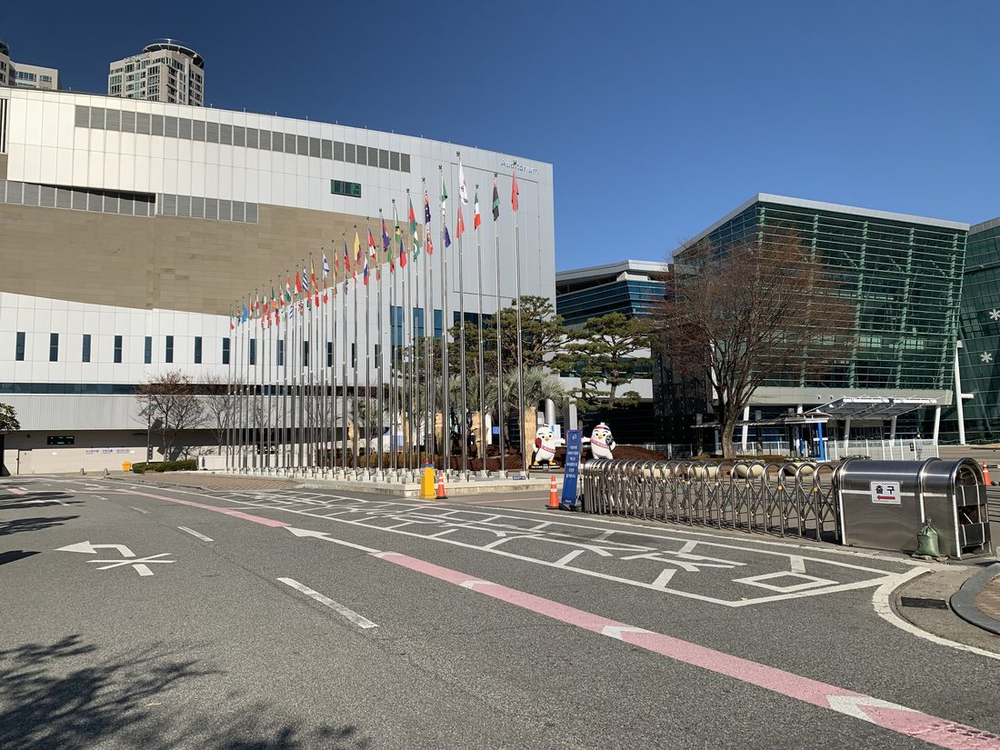
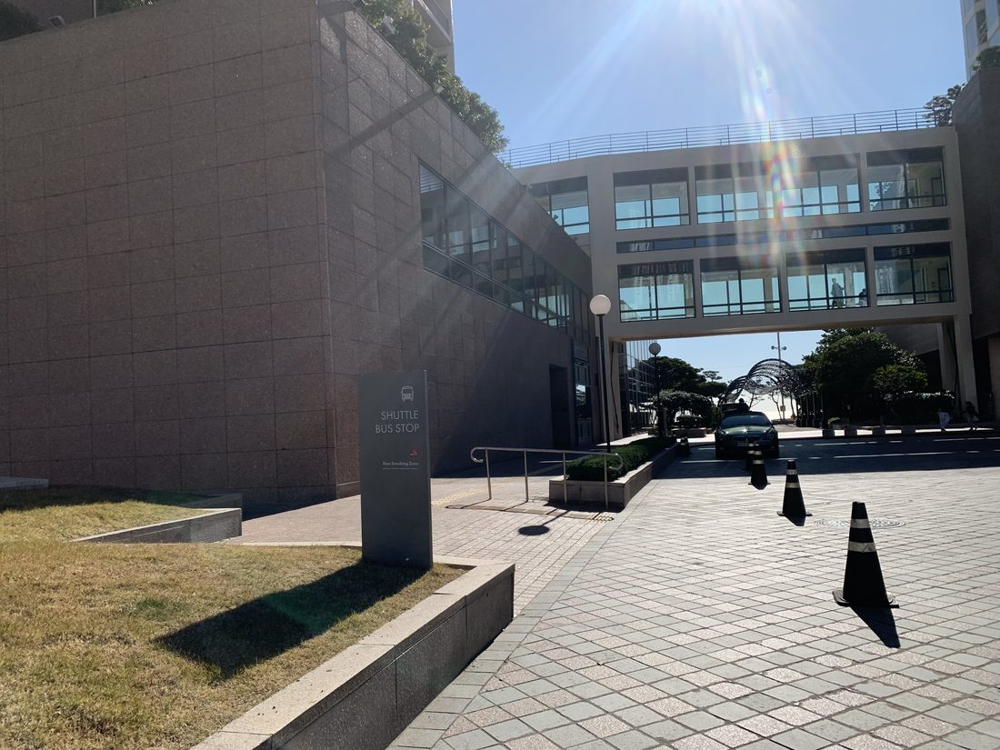
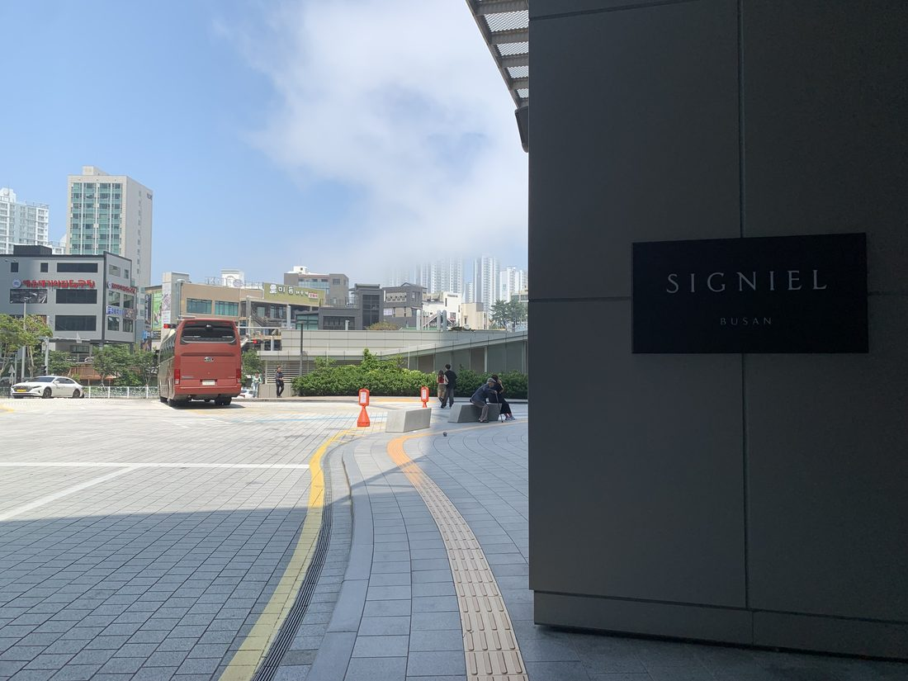
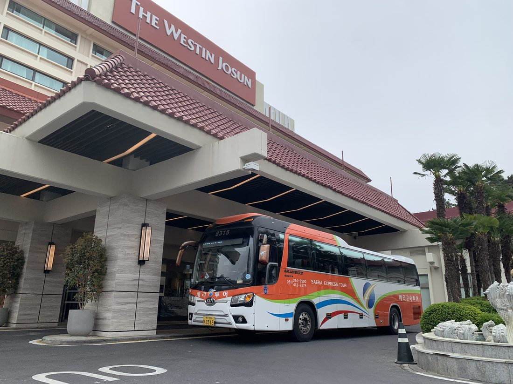
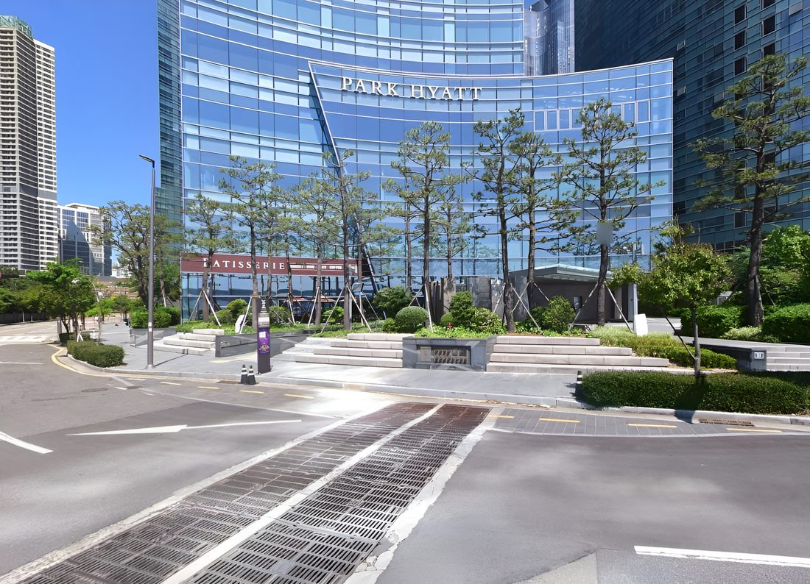

Venue Shuttle Hotel ↔ BEXCO
등록 참가자 무료 셔틀. 공식호텔 ↔ BEXCO, 10/21~24 운행.
Free shuttle for registered attendees. Official hotels ↔ BEXCO. Oct 21–24.
행사장 노선 Venue Routes
전체 학회 기간 동안 5개 공식호텔과 BEXCO를 2개 노선으로 나누어 운행합니다.
무료, 예약 불필요.
Two routes connect all 5 official hotels to BEXCO throughout the conference.
Free, no reservation needed.
그랜드조선 해운대 투숙객 안내
For guests at Grand Josun Haeundae
그랜드조선 해운대 투숙객께서는 행사장 셔틀 이용 시 파라다이스 호텔 정거장을 이용해 주세요. 그랜드조선 ↔ 파라다이스 호텔은 도보 약 5분 거리입니다.
Guests at Grand Josun Haeundae: please board the event shuttle at the Paradise Hotel stop (~5 min walk from Grand Josun).
- 시그니엘Signiel
- 파라다이스Paradise
- BEXCO
- BEXCO
- 파라다이스Paradise
- 시그니엘Signiel
10/21(수) 운영시간: 프로그램 08:00-17:15 · 집중 운행 07:00-10:00(20분 간격) · 일반 운행 08:30-17:00(1시간 간격) · 집중 운행 17:30-18:20(20분 간격)
Oct 21 (Wed) hours: Program 08:00-17:15 · Peak 07:00-10:00 (every 20 min) · Regular 08:30-17:00 (hourly) · Peak 17:30-18:20 (every 20 min)
10/22(목) 운영시간: 프로그램 08:30-18:00(1그룹 종료 16:30) · 집중 운행 07:20-08:00(10분 간격) · 일반 운행 09:00-17:00(1시간 간격) · 집중 운행 17:00-18:30, 19:40-19:50(10분 간격)
Oct 22 (Thu) hours: Program 08:30-18:00 (Group 1 ends 16:30) · Peak 07:20-08:00 (every 10 min) · Regular 09:00-17:00 (hourly) · Peak 17:00-18:30, 19:40-19:50 (every 10 min)
10/23(금) 운영시간: 프로그램 08:30-16:50 · 집중 운행 07:20-08:00(10분 간격) · 일반 운행 09:00-17:00(1시간 간격) · 집중 운행 17:00-17:30(10분 간격) / 18:00 디너 만찬(시그니엘)
Oct 23 (Fri) hours: Program 08:30-16:50 · Peak 07:20-08:00 (every 10 min) · Regular 09:00-17:00 (hourly) · Peak 17:00-17:30 (every 10 min) / 18:00 Faculty Dinner (Signiel)
10/24(토) 운영시간(폐회일): 프로그램 08:30-16:00(15:15 세션 종료) · 집중 운행 07:20-08:00(10분 간격) · 일반 운행 09:00-14:30(1시간 간격) · 집중 운행 15:20-16:00(10분 간격)
Oct 24 (Sat, closing day) hours: Program 08:30-16:00 (sessions end 15:15) · Peak 07:20-08:00 (every 10 min) · Regular 09:00-14:30 (hourly) · Peak 15:20-16:00 (every 10 min)
- 웨스틴조선Westin Josun
- 파크하얏트Park Hyatt
- BEXCO
- BEXCO
- 파크하얏트Park Hyatt
- 웨스틴조선Westin Josun
10/21(수) 운영시간: 프로그램 08:00-17:15 · 집중 운행 07:00-10:00(20분 간격) · 일반 운행 08:30-17:00(1시간 간격) · 집중 운행 17:30-18:20(20분 간격)
Oct 21 (Wed) hours: Program 08:00-17:15 · Peak 07:00-10:00 (every 20 min) · Regular 08:30-17:00 (hourly) · Peak 17:30-18:20 (every 20 min)
10/22(목) 운영시간: 프로그램 08:30-18:00(1그룹 종료 16:30) · 집중 운행 07:20-08:00(10분 간격) · 일반 운행 09:00-17:00(1시간 간격) · 집중 운행 17:00-18:30, 19:40-19:50(10분 간격)
Oct 22 (Thu) hours: Program 08:30-18:00 (Group 1 ends 16:30) · Peak 07:20-08:00 (every 10 min) · Regular 09:00-17:00 (hourly) · Peak 17:00-18:30, 19:40-19:50 (every 10 min)
10/23(금) 운영시간: 프로그램 08:30-16:50 · 집중 운행 07:20-08:00(10분 간격) · 일반 운행 09:00-17:00(1시간 간격) · 집중 운행 17:00-17:30(10분 간격) / 18:00 디너 만찬(시그니엘) — 17시 이후 오는 편은 시그니엘(만찬장)까지 연장 운행합니다.
Oct 23 (Fri) hours: Program 08:30-16:50 · Peak 07:20-08:00 (every 10 min) · Regular 09:00-17:00 (hourly) · Peak 17:00-17:30 (every 10 min) / 18:00 Faculty Dinner (Signiel) — after 17:00, return trips extend to Signiel (dinner venue).
10/24(토) 운영시간(폐회일): 프로그램 08:30-16:00(15:15 세션 종료) · 집중 운행 07:20-08:00(10분 간격) · 일반 운행 09:00-14:30(1시간 간격) · 집중 운행 15:20-16:00(10분 간격)
Oct 24 (Sat, closing day) hours: Program 08:30-16:00 (sessions end 15:15) · Peak 07:20-08:00 (every 10 min) · Regular 09:00-14:30 (hourly) · Peak 15:20-16:00 (every 10 min)
Faculty Dinner 셔틀 Faculty Dinner Shuttle
10/23(금) 저녁, 노선 선택과 무관하게 운영
Oct 23 (Fri) evening, runs independently of route selection
Faculty Dinner 초청자 전용이며 일반 등록 참가자는 이용하실 수 없습니다. 만찬장행 17:00~17:30(10분 간격)은 위 베뉴 셔틀을 그대로 이용해 시그니엘로 이동합니다. 귀가행은 만찬 종료 후 20:00부터 2분 간격으로 10대가 순차 출발하며, 벡스코 인근 호텔 투숙객은 벡스코까지 연장 운행합니다.
For invited Faculty Dinner guests only — not available to general registered attendees. To the dinner (17:00–17:30, every 10 min), use the venue shuttle above to Signiel. After the dinner, 10 buses depart every 2 minutes from 20:00; guests staying near BEXCO can ride to BEXCO on the extended run.
셔틀 정류장 Shuttle Stops
5개 공식호텔과 BEXCO가 정류장입니다. 호텔 또는 BEXCO에서 탑승하세요.
All 5 official hotels and BEXCO are shuttle stops. Board at your hotel or at BEXCO.





공식 호텔 안내 Official Hotels
주요인사 5곳, 일반참가자 11곳 — BEXCO 기준 위치입니다.
5 VIP hotels, 11 general-participant hotels — relative to BEXCO.
주요인사 호텔VIP & Organizing Committee
- A파크하얏트 부산Park Hyatt Busan
- B웨스틴조선 부산Westin Josun Busan
- C그랜드조선 해운대Grand Josun Haeundae
- D파라다이스 호텔 부산Paradise Hotel Busan
- E시그니엘 부산Signiel Busan
일반참가자 호텔General Participant Hotels
- 1L7 해운대 바이 롯데L7 Haeundae by LOTTE
- 2트래블로지 스위트 부산 센텀Travelodge Suites Busan Centum
- 3라마다 앙코르 바이 윈덤 부산 해운대Ramada Encore by Wyndham Busan Haeundae
- 4펠릭스 바이 STXFelix by STX Hotel & Suite
- 5라비드 아틀란 호텔Lavi De Atlan Hotel
- 6해운대 센트럴호텔Haeundae Central Hotel
- 7플레아드블랑 호텔 앤 레지던스Plea De Blanc Hotel & Residence
- 8부산 영무파라드 호텔 해운대비치Busan Yeongmu Parade Hotel Haeundae Beach
- 9블루스토리 호텔Blue Story Hotel
- 10코오롱 씨클라우드 호텔Kolon Seacloud Hotel
- 11해운대 마리안느 호텔Haeundae Marianne Hotel
이용 안내Information
탑승 자격 · 이용 안내
Eligibility & Guidelines
- APHRS 2026 등록 참가자에게 무료로 제공됩니다. 등록 배지를 지참해 주세요.
- 선착순 탑승입니다. 별도 예약은 필요하지 않습니다.
- 출발 10분 전까지 정류장에 도착해 주세요.
- 피크 시간대에는 만석일 수 있습니다. 만석 시 다음 운행 편을 이용해 주세요.
- 시간표는 변경될 수 있습니다. 현장 안내판을 확인해 주세요.
- Free for APHRS 2026 registered attendees. Please wear your conference badge.
- First-come, first-served. No reservation required.
- Please arrive at the stop 10 minutes before departure.
- Shuttles may be full during peak hours. Please wait for the next service.
- Schedule is subject to change. Check on-site boards for updates.
예약 내역 조회Booking Lookup
예약번호와 이메일을 입력하면 데모 예약 내역을 확인합니다.
Enter your booking number and email to view your demo booking details.
※ 콘셉트 데모입니다. 실제 예약 시스템과 연동되지 않으며, 예시 안내만 표시됩니다.
※ This is a concept demo. Not connected to an actual booking system. Sample information only.